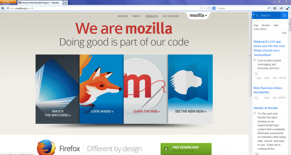

Mozilla 是受大家極度信賴的非營利組織，時時推動網路的開放、創新、機會並作為己身使命。我們不斷研發開放的技術，藉以推動所有人都能從中受益的標準，進而讓 Web 成為業界與開發者都適用的平台。我們專心研發有趣、豐富、新奇、強大的產品，讓大家都能簡單上手且愛不釋手，確實體現我們使命的價值。

在著手建構 Firefox OS 之時，Mozilla 已經先行分析並了解 Web 所應演化的方向，再逐步導引 Web 成為更好的行動平台。而當發表第一波 Firefox OS 裝置上市時，我們也更深入熟悉本身的產品與組織，意識到自己必須再度成長才足以解決新的挑戰並掌握新的機會。
Mozilla 在去年創立了新的團隊，並隨著行動裝置的爆炸性成長，時時刻刻注意目前 Web 的特定領域 ─ 雲端。身為Web (以及其息息相關的雲端) 的先鋒長達十五年，Mozilla 一直活躍在雲端服務的最前線。針對如 Firefox 瀏覽器等軟體產品，我們持續努力進行下載與更新作業的最佳化；也不斷嘗試讓附加元件 (add-ons) 平台整合如 Firefox Sync、WebRTC、社交媒體，還有更多功能。
雖然 Mozilla 的服務仍持續提供附加價值，並讓使用者與開發者都能進一步掌握自己的 Web 經驗，但我們卻尚未提供簡單的登入方式，讓大家能輕鬆跨 Mozilla 產品而取得內建的諸多服務。
Mozilla 在今天正式介紹 Firefox Accounts，讓使用者能輕鬆且安全建立自己的帳戶，並能隨時透過 Firefox 登入而取得所需的服務。透過 Firefox Accounts，Mozilla 能將如 新版 Firefox Sync 相關服務，更妥善整合至大家的 Web 經驗之中。
Firefox Sync 的同步功能與之前相同，可讓你跨裝置攜帶自己的瀏覽資料 (如書籤、密碼、瀏覽記錄、已開啟的分頁)；但我們進一步簡化了服務與添增裝置的設定，同時仍具備相同的瀏覽器加密機制。
如果你已經安裝 Firefox 曙光版 (Aurora)，即可體驗並測試新的 Firefox Accounts 與 Firefox Sync。我們正持續開發最佳的 Firefox Sync 經驗，也期待獲得任何人提供的寶貴意見，讓這項服務能盡可能完美呈現給全世界享受。
Mozilla 很高興能發掘更多新的服務與功能，讓使用者能透過 Firefox 獲得更完善的 Web 經驗。我們後續將分享更多Firefox Accounts 與其他服務 (如 Firefox Sync) 的消息。
更多相關資訊：